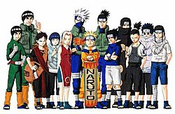
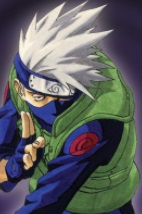
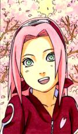

The Naruto (Japanese: ナルト) manga and anime series features an extensive cast of characters created by Masashi Kishimoto. The series takes place in a fictional universe where countries vie for power by employing ninja who can use superhuman abilities in combat. The storyline is divided into two parts, simply named Part I and Part II, with the latter taking place two-and-a-half years after the conclusion of Part I. It is followed by the sequel series Boruto: Naruto Next Generations by Ukyō Kodachi, which continues where the epilogue of the first series left off. The series' storyline follows the adventures of a group of young ninja from the village of Konohagakure (Village Hidden in the Leaf).
Naruto Uzumaki (うずまき ナルト, Uzumaki Naruto) was the first character created by Kishimoto during the conception of the series and was designed with many traits from other shōnen characters.[7] He is often shunned by the Konohagakure villagers, as he is the host of Kurama, the Nine-Tailed Fox that attacked Konoha.[ch. 2] He compensates for this with his cheerful and boisterous personality, vowing to never give up on any goal he sets. In particular, Naruto has ambitions of becoming Hokage, the leader of Konohagakure, to gain the villagers' respect and be able to protect them. During a battle as a ninja, Naruto masters various ninjutsus including the ability to create a massive and several clones of himself known as "Shadow Clone Jutsu" and the ability to use his wind nature as he's able to master the spiral chakra sphere known as the "Rasengan" for the purposes of the offense. Over the course of the series, Naruto befriends many foreign and Konoha people and eventually claims a sizable positive impact on their lives, which grants him worldwide fame.[ch.. 450] Naruto eventually achieves his dream of becoming Hokage, marries Hinata Hyuga and has two children named Boruto Uzumaki and Himawari Uzumaki.[ch.. 700] Naruto is voiced by Junko Takeuchi in Japanese, and by Maile Flanagan in English. Naruto is the title character and main protagonist of the franchise.

Sasuke Uchiha (うちは サスケ, Uchiha Sasuke) is Naruto's rival. He was designed by Kishimoto as the "cool genius" since he felt this was an integral part of an ideal rivalry.[1] Sasuke's older brother, Itachi Uchiha, killed the rest of their family.[ch. 224] Because of this, Sasuke's sole desire is to kill his brother, and he develops a cold and withdrawn personality, seeing people as tools to further his goals, although also gaining the affection of most of the girls he knows, much to his annoyance. After he becomes a member of Team 7, Sasuke seems to begin considering his teammates precious to the point of risking his life to protect them, while focusing on revenge less than at the start of the series. Following an encounter and a subsequent defeat at the hands of his brother in Part I, however, Sasuke severs his ties and leaves the village to seek more power from Orochimaru. By the events of the Boruto franchise, Sasuke has become a vigilante investigating the Otsutsuki clan for Konohagakure. Sasuke is voiced by Noriaki Sugiyama in the Japanese anime, while his English voice actor is Yuri Lowenthal.

Kakashi Hatake (はたけ カカシ) is the easygoing, smart leader of team 7, consisting of Naruto Uzumaki, Sasuke Uchiha and Sakura Haruno. Kakashi had a dark past, but is unaffected by it as an adult. He was a very vital key for Naruto's success, training him to be a great ninja. Kakashi is a master of the Sharingan, which he gained as a present from his late friend, Obito Uchiha. Kakashi's original eye was restored late into part 2 of the series. Kakashi is killed by Nagato, who later repents and revives him. Kakashi succeeds Tsunade as the sixth Hokage in the late parts of Naruto Shippuden.
Sakura Haruno (春野 サクラ, Haruno Sakura) is a member of Team 7. While creating the character, Kishimoto has admitted that he had little perception of what an ideal girl should be like.[1] As a child, Sakura was teased by other children because of her large forehead, a feature Kishimoto tried to emphasize in Sakura's appearance. She was comforted by Ino Yamanaka[12] and the two developed a friendship. However, as the two grew, they became increasingly distant due to their shared affection for Sasuke Uchiha. During the early moments of Part I, Sakura is infatuated with Sasuke and resents Naruto Uzumaki, although Sasuke views her as "annoying" and Naruto has feelings for her.[ch. 3] Her perception on Naruto eventually changes, however, and she comes to see him as a friend, while her feelings for Sasuke grow into deep love. In the Japanese anime, her voice actress is Chie Nakamura, and she is voiced by Kate Higgins in the English adaptation.[13][14]
